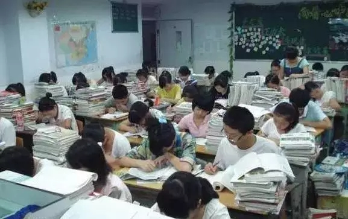
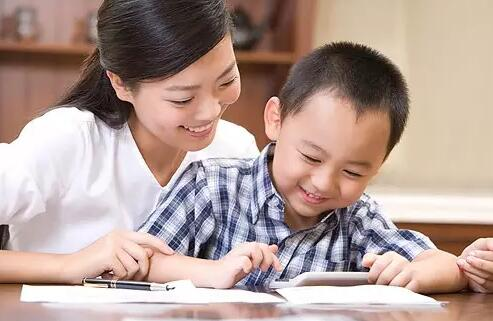

互惠动态
|
|
一个班37人考进清华北大，老师发来一则短信，家长都沉默了！

开学了，一个班主任给家长发了一则短信：
不管成绩怎样，没有什么优生差生的区别。家长们知道，每一个小孩都是种子，只是每个人花期不同，有的花一开始，就绚丽绽放；而有的花， 却需要漫长的等待。
不要紧盯别人的花，不要觉得别人家的永远都是好，相信花有自己的花期，细心呵护，看着他一点点地成长，这何尝不是一种幸福。也许你的种子永远都不开花，因为他是一棵参天大树。
我国有这样一位老师，他带的一个55人的班，37人考进清华、北大，10人进入剑桥大学、耶鲁大学、牛津大学等世界名校并获全额奖学金，其他考入复旦、南开等大学。不仅如此，校足球冠军、校运动会总冠军、校网页设计大赛总冠军等６项文体冠军，都被这个班夺走；音乐才子、辩论高手、电脑奇才、跆拳道高手在这个班比比皆是。
他也是一名相当成功的父亲，他的女儿也以优异成绩被北大录取。他就是全国优秀教师，人大附中数学老师王金战。
以下是王老师总结的教育经验，强烈建议每位父母花约三分钟时间阅读，仔细品味一定会受益匪浅！
01. 影响孩子成绩的主要因素不是学校，而是家庭。
02. 如果家庭教育出了问题，孩子在学校就可能会过的比较辛苦，孩子很可能会成为学校的“问题儿童”。
03. 成绩好的孩子，妈妈通常是有计划而且动作利落的人。父亲越认真，越有条理，越有礼貌，孩子成绩就越好。
04. 贫穷是重要的教育资源，但并非越贫穷越有利于孩子的成长。做父母的，需要为孩子提供基本的文化资料，不让孩子陷入人穷志短的自卑深渊。
05. 富裕是另一种更高级的教育资源，西方人的经验是：“培育一个贵族需要三代人的努力。”“阶层是会遗传的。”但是，更高级的教育资源需要有更高级的教育技艺，如果没有更高级的教育技艺，富裕的家庭反而会给孩子的成长带来灾难。
06. 不要做有知识没文化的家长。有些人有高学历，但不见得有文化。如果家长不懂得生活，不知道善待他人，甚至不懂得善待自己的孩子，无论他拥有多高的学术水平，他也是没有文化的人。
07. 父母可以把孩子作为世界的中心，但是不要忘了父母也要过独立的生活。如果父母完全围绕孩子转而没有了自己的生活主题，这样的父母常常会以爱的名义干扰孩子的成长。有时侯，并不是孩子离不开父母，而是父母离不开孩子。
08. 父母需要承担教育孩子的责任，不过，也不要因为教育孩子而完全取消了自己的休闲生活。“没有责任感伤害别人，太有责任感伤害自己。”
09. 如果孩子一哭闹父母就赶紧抱起孩子，那么，孩子就会利用父母的这个特点经常纠缠父母，提出更多的要求。所以，孩子哭闹，不要着急把孩子抱起来，父母最好让自己有事情做，让孩子看着自己动作麻利地做事。
10. 夫妻关系影响孩子的性格。一个男人如果不尊重他的妻子，那么，他的儿子就学会了在学校不尊重他的女同学。一个女人如果不尊重她的丈夫，那么，她的女儿就学会了在学校瞧不起她的男同学。
11. 教育就是培育人的精神长相。家长和教师的使命就是让孩子逐步对自己的精神长相负责任，去掉可能沾染的各种污秽，培育人身上的精神“种子”，让人可以呼吸高山空气，让人可以扬眉吐气。
12. 有修养的父母是“伏尔泰主义者”，“我不同意你的观点，但我誓死捍卫你说话的权利”。他们从孩子出生的那天就开始跟孩子讲道理，耐心的征求孩子的意见。不要指望打骂孩子就能让孩子学会服从。杀鸡给猴看的结果是：猴子也学会了杀鸡。
13. 让孩子成为既有激情又有理智的人。“没有激情，任何伟业都不可能善始，没有理智，任何壮举都不能善终。”
14. 让你的孩子成为有教养的人，有教养从守时，排队，在公共场合不大声说话，不轻易发怒开始。
15. 做人要厚道。如果你的孩子比较厚道，请不要嘲笑他的软弱。喜欢占小便宜的人，往往吃大亏，因为他被别人厌恶。愿意吃小亏的人，将来会占大便宜，因为他被人喜欢。
16. 身体的活力能够带来精神的活力。身体好的人，性格阳光。身体不好的人，做事犹犹豫豫，躲躲闪闪，说话吞吞吐吐。
17. 不要以为孩子1到6岁只是长身体的年龄。如果父母让孩子1到6岁在祖父母或外祖父母那里度过，等到孩子6岁时父母再把孩子接回来上小学，那么，这个孩子在小学要么成为默默无语的沉默者，要么成为无法无天的捣乱者。
18. 经常和孩子一起做三件事：一是和孩子一起进餐，二是邀请孩子一起修理玩具，家具或衣物，偶尔邀请孩子帮忙解决工作中的困难。三是给孩子讲故事并邀请孩子自己讲故事。
19. 如果没有特别困难，父母最好每天赶回家和孩子一起进餐。家庭的共同价值观，就在全家人围着一张桌子吃饭的过程中建立起来。
20. 给孩子讲故事并邀请孩子自己讲故事，让孩子从听故事开始建立阅读和写作习惯，让孩子尽早学会独立阅读，尽早养成终身阅读的习惯。“只要还在读书的人，就不会彻底堕落，彻底堕落的人是不读书的。”从来不给孩子讲故事的父母，是不负责任的父母。
21. 孩子的成长有三个关键期：第一个在3岁前后，第二个在9岁前后，第三个在13岁前后。如果错过了成长的关键期，后患无穷。
22. 不是“三十而立”,而是“三岁而立”。孩子三岁前后，就必须建立自食其力的勇气和习惯。凡是自己能够做的，必须自己做，凡是自己应该做的，当尽力去做。
23. 如果你的孩子在13岁的时候喜欢弗罗斯特的诗句：“两条路在树林里分岔，我选择走人少的那一条”，这很正常，不要担心，他以后也许会选择人走的多的那一条。
24. 父母给孩子讲道理是必要的，但给13岁前后的孩子讲道理时，要注意自己讲话的姿态，姿态比道理更重要。否则，孩子会厌恶，反抗。孩子会说：你讲的话都是对的，但你讲话的那个样子很令人讨厌。
25. 心底秘密是人成长，成熟的标志。如果孩子有心事，他不想告诉你，那么，不要逼迫孩子把他的秘密说出来。
26. 在孩子3岁前后，他的身边最好有一个无为的放任型父母。在孩子9岁前后，他的身边最好有一个积极的权威型父母。在孩子13岁前后，他的身边最好有个消极的民主型父母。有效的教育是先严后松，无效的教育是先松后严。
27. 必须留意你的孩子的学习成绩，但也不必太在意他的名次。倒是需要警惕那些学习成绩总是第一名的孩子。有些孩子学习成绩好，性格也好，有些孩子学习成绩很好，但性格却自私，缺乏同情心，没有生活情趣。
28. 必须让你的孩子学会与他人交往并愉快的接受小伙伴。“如果父母对自己的邻居不满，对孩子的小伙伴也十分挑剔，或者不让自己的孩子和他们交朋友，让孩子觉得好像自己跟别人很不一样，那么，这些孩子长大以后就很难与任何人自然地相处。
29. 孩子的成长需要同伴，让孩子有自己的朋友，但不要有太杂乱的伙伴，在孩子没有形成成熟的理性和判断里之前，警惕孩子沾染同伴的坏习惯。
30. 让你的孩子尽早建立健康的审美观。有出息的男性一定会喜欢健康的女性。不要让孩子的审美观陷入低级，病态。不要以为小的，有病的，就是好的。不要以为强大的，就都是坏的。不要以为小麻雀，小绵羊，小狗都是可爱的，也不要以为狮子，老虎，狼都是坏的。不要以为豺狼都是吃人的，豺狼只吃比他弱小的。
31. 《麦田里的守望者》为世界贡献了一个词语：守望。教育不是管，也不是不管。在管与不管之间，有一个词语叫“守望“。
32. 告诉你的孩子：认真听讲的孩子偶尔成绩好，认真自学的孩子永远成绩好。

教育意味着一棵树摇动另一棵树，一朵云推动另一朵云，一个灵魂唤醒另一个灵魂
家长和孩子就像两颗彼此分离又相互靠近的大树和小树，大树要为小树遮挡风沙，也要给小树留下足够的空间，感受阳光，呼吸空气。这样小树才能在属于自己的空间里自由伸展，茁壮成长。太靠近大树的小树是不能长成参天大树的，而远离大树的小树却要去独自地抵挡风沙，虽坚强无比却又极易扭曲或夭折
每一个小孩都是种子，请允许Ta在成长的路上跌跌撞撞。耐心的等待吧，种子一定能长成参天大树！

关于互惠，您了解得够多么？
请外国学生来家庭照顾孩子，辅导孩子外语？
只了解这些是不够的！
获取更多信息请参考以下方式：
联系ASC：
电话：86-21-61116069(上海中心）
86-25-66065662（南京中心）
手机：15601666586（可加微信）
Q Q：3259637585
微信：asc-center
邮箱：info@asc-center.com
网站：www.asc-aupair.com

感谢您对我们的关注